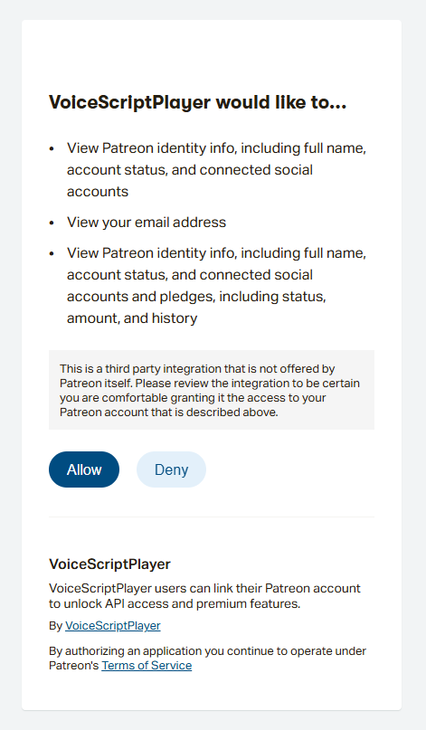

🔗 程序集成指南 (Program Integration)¶
1. 概述 (Overview)¶
VoiceScriptPlayer 通过 Patreon 赞助认证 提供集成服务器连接功能，让用户无需繁琐地申请个人 API 密钥即可使用 AI 服务。
完成认证后，您可以在每月分配的额度内立即使用 Hailuo (语音合成) 和 DeepL (翻译) 等付费功能。
2. Patreon 赞助关联 (Patreon Integration)¶
请按照以下步骤关联您的账号并激活赞助者专属功能：
步骤 1: 开始关联¶
在设置窗口的 [赞助关联] 区域，点击 “通过 Patreon 连接” 按钮。如果您想使用自己的 API 密钥，也可以在下方输入框中手动输入。

步骤 2: Patreon 登录与授权¶
- 浏览器会自动打开，请点击 “Patreon 登录” 按钮进行登录。
- 确认 VoiceScriptPlayer 请求的权限（账号信息及赞助状态确认）后，点击 “允许 (Allow)”。
| 1. 登录页面 | 2. Patreon 登录 | 3. 权限授权页面 |
|---|---|---|
 |
 |
 |
步骤 3: 确认关联完成¶
关联成功后，程序内的按钮将变为 “断开赞助关联”。此时请确认下方是否显示了当前关联的服务（Hailuo, DeepL 等）和剩余额度信息。

3. 各服务服务器激活 (Server Configuration)¶
完成 Patreon 关联后，在使用各项具体功能时，需要开启 “使用集成服务器” 的设置。
开启 VoiceScriptServer 设置¶
在各项 AI 服务（Hailuo, DeepL 等）的设置项中，将 “使用 VoiceScriptServer” 开关切换为 [开启] 状态。
- 开关 [关闭]: 使用您在下方手动输入的个人 API Key。
- 开关 [开启]: 使用通过 Patreon 关联提供的集成服务器 API。（推荐）

4. 赞助等级与权益 (Subscription Tiers & Benefits)¶
通过 Patreon 赞助，您可以获得各服务的 AI 额度。额度每月更新，具体容量取决于您的赞助等级。
| 等级 (Tier) | 每月订阅费 | DeepL (翻译) | Hailuo (语音合成) |
|---|---|---|---|
| 🆓 Free Tier | 免费 | 10,000 字符 | 2,000 字符 |
| 🌟 Supporter | $7 / 月 | 100,000 字符 | 20,000 字符 |
| 🧡 Creator | $20 / 月 | 1,000,000 字符 | 100,000 字符 |
| 🔥 Pro | $50 / 月 | 3,000,000 字符 | 300,000 字符 |
📋 重要提示¶
- 自动停止系统: 达到免费/奖励额度上限后，服务将自动停止，绝不会产生额外费用。
- 额度更新: 所有额度将在每月订阅更新时重置。
- 政策变动提示: 根据 AI 服务商的政策，提供的容量和权益可能会发生变动。
🔗 查看详情与赞助 > 有关各等级的最新权益和详细信息，请务必参考 Patreon 官方页面。
⚠️ 使用前注意事项 (Important Notice)¶
Patreon 会员资格是 支持 VoiceScriptPlayer 持续开发和维护的一种方式。提供的 AI 额度是作为对您支持的感谢而提供的 额外奖励 (Bonus)。
- 建议直接订阅: 如果您需要大量或专业地使用 AI 服务（DeepL, Hailuo 等），直接订阅该服务并获取 API Key 使用会便宜得多。
- 不可替代商用计划: 此处提供的额度并非为了替代各 AI 服务的官方商用计划（如 DeepL Pro）。
- 性价比说明: 由于包含了集成服务器的维护成本，此额度的字符单价比直接从服务商处购买更高。
💡 高效使用建议: 轻量使用或想省去配置麻烦时，请使用 Patreon 关联；需要大规模翻译或语音合成任务时，建议使用 个人 API Key。
5. 问题排除 (Troubleshooting)¶
- ❓ 我是赞助者，但显示额度为 0。
- 请点击“断开赞助关联”后重新关联。数据同步可能需要一点时间。
- ❓ 找不到“使用 VoiceScriptServer”选项。
- 请确保 VoiceScriptPlayer 已更新至最新版本。
- ❓ 在浏览器点击“允许”后没有反应。
- 请检查防火墙或杀毒软件是否拦截了程序的通信。